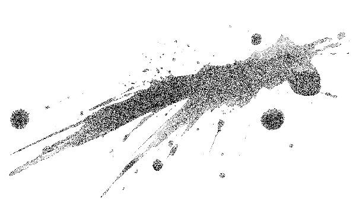
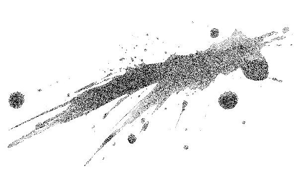
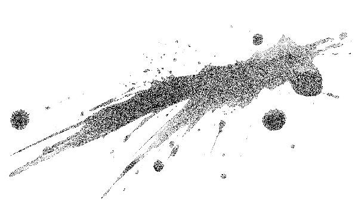

시간이 많이 흘렀을까, 조금 흘렀을까.
이성이 있는 상태의 너를 본 지도 꽤 된 것 같다.
.
.
.
이제는 이성이 있을 때보다 없을 때가 더 많은 너.
어차피 갈 곳이 없어진 나도, 네가 멋대로 가는 길 따라 쫓아다닌다.
저벅저벅. 갈 곳 없는 좀비 둘이 허위허위 쏘다닌다.


우리는 이 상태로 산 사람을 마주치기도 했다.
내가 그와 뭐라 대화를 나누기도 전에 너는 그를 공격하기에 바빴다.
덕분에 아무 의사소통도 하지 못한 채 잔인하게 뜯어먹힌 이가 이제는 꽤 여럿에 달할 것이다.
그러한 살육이 몇 차례씩이나 반복되었다.
그런데 이런 광경보다도 더 이상한 것은,
그 모든 과정을 지켜보면서도 완전한 좀비가 된 너에 대한 연민이나 네가 뜯어먹은 이에 대한
연민, 유감, 슬픔 따위를 전혀 느끼지 못하는 바로 나.
무엇을 봐도 입술 새로 나오는 탄성인지 괴성인지 모를 것을 흘리는 것밖에는 할 수 없게 된 나다.

내 얼굴과 팔다리는 눈앞 상황과 관계없이 멋대로 움직이고 있고,
모든 일은 그저 내 눈 앞에서 의미 없는 동영상처럼 흘러갈 뿐이다.
아무런 사고나 감상도 떠올리지 않은 채 그 영상들을 응시한다.
더 이상 내가 통제하는 몸이 아닌, ‘그것’이 저지르는 대로 일어나는 일들을 그저 보기만 할 뿐이다.
click here↓